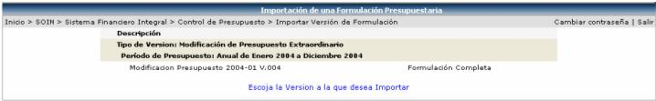
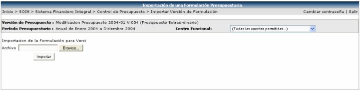

En esta opción se importa la información de una versión de formulación de presupuesto que el usuario seleccione de la lista que muestra la siguiente pantalla:

Una vez seleccionada la versión, se presenta la siguiente pantalla donde se procede a importar un archivo en Excel o txt:

En esta pantalla se presiona
el botón  para buscar el archivo a importar y una vez seleccionado
el archivo se presiona el botón
para buscar el archivo a importar y una vez seleccionado
el archivo se presiona el botón  .
.
El formato con la información que debe de tener el archivo es el siguiente:
- Cuenta de Presupuesto.
- Descripción de la Cuenta.
- El Tipo de Control: 1 = Abierto, 2 = Restringido y 3 = Restrictivo.
- El Método de Cálculo: 1= Mensual, 2 = Acumulativo y 3 = Total.
- Código de Oficina:
- Código de Moneda.
- Año Inicial Periodo Presupuestos (YYYY).
- Mes Inicial Periodo Presupuestos (MM).
- Monto para el Primer Mes
- Monto para el Segundo Mes
- Monto para el Tercer Mes
- Monto para el Cuarto Mes
- Monto para el Quinto Mes
- Monto para el Sexto Mes
- Monto para el Sétimo Mes
- Monto para el Octavo Mes
- Monto para el Noveno Mes
- Monto para el Décimo Mes
- Monto para el Décimo Primer Mes
- Monto para el Décimo Segundo Mes
Cada una de la información va separada por comas y cada registro por un Enter: